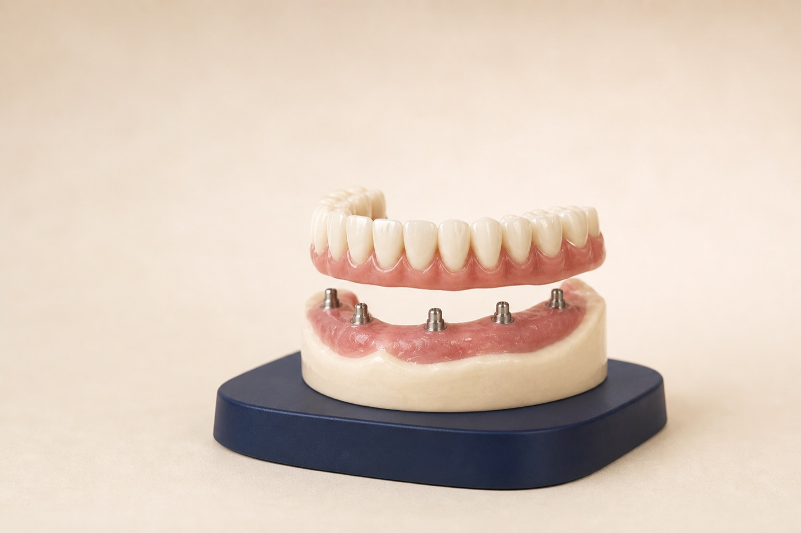

Diagnose
Review health, imaging, existing teeth, bone, bite, and goals.
Full arch therapy in Renton, WA
When many teeth are missing, painful, loose, or failing, full arch therapy coordinates the surgical and restorative steps needed to rebuild an upper arch, lower arch, or both.

Your treatment path
We map the final tooth position first, then plan the clinical steps needed to support it.
Review health, imaging, existing teeth, bone, bite, and goals.
Compare fixed and removable options, phases, fees, and maintenance.
Complete any needed extractions, grafting, implants, and provisional teeth.
Deliver the definitive teeth and establish a long-term care schedule.
Not every patient qualifies for immediate implants or same-day fixed teeth. Recommendations require an in-person exam and imaging.
When it may help
Full arch treatment is considered when repairing individual teeth would not create a predictable, maintainable result. The right design depends on your anatomy, priorities, dexterity, timeline, and budget.
Several missing teeth can make chewing, speaking, and smiling feel difficult.
Advanced decay, fractures, or gum disease may leave too few stable teeth to restore separately.
Implant support may improve retention, stability, and confidence for appropriate candidates.
Planning the whole system
A full arch restoration must be more than attractive. It must provide appropriate support, cleanability, speech, and a stable bite.
Full arch FAQ
It rebuilds most or all teeth in an upper or lower arch using a coordinated restorative plan, which may include implant-supported or removable teeth.
All-on-4 is one implant configuration. Full arch therapy is broader, and the number and position of implants depend on anatomy and the restorative plan.
Some patients may qualify for a same-day provisional arch, but stability, bone, bite, health, and healing factors determine whether it is appropriate.
Home care commonly includes brushing and cleaning underneath the restoration with tools recommended for your design, plus regular professional maintenance.
Start with a no-pressure conversation and a plan built around your situation.